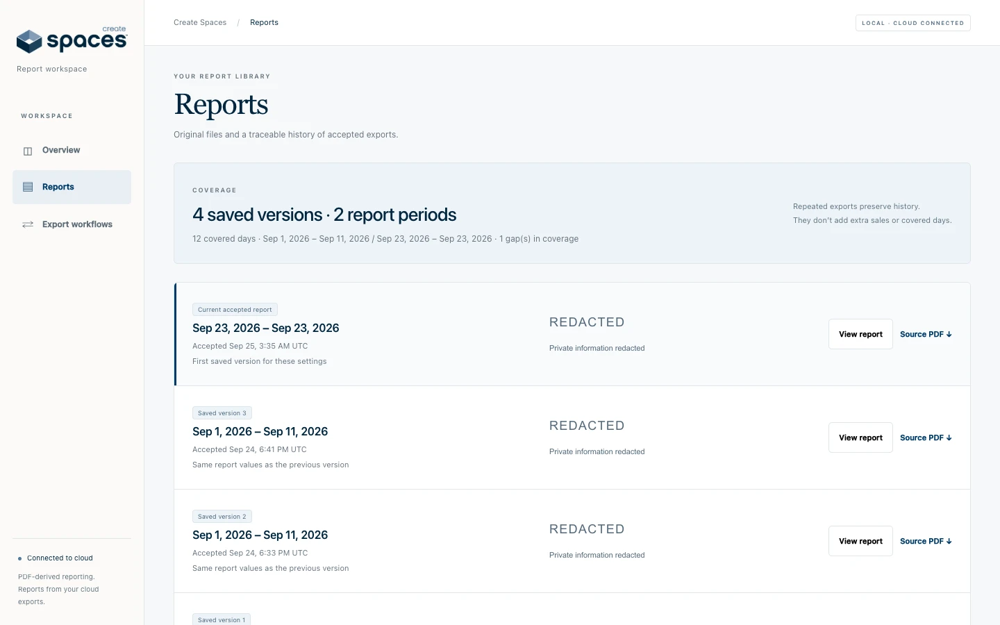
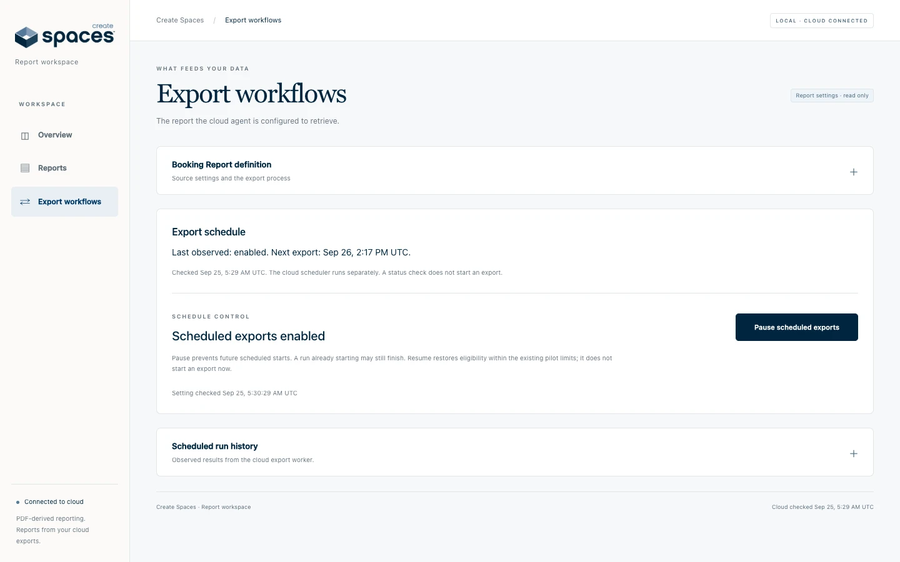
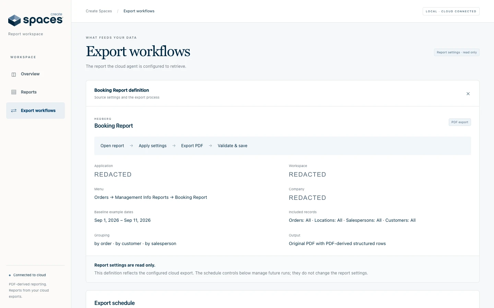

Booking reports become a workspace for sales trends, export visibility and AI answers with cited sources.
PROJECTCreate Spaces
MY ROLESoftware Engineer · Manifold
STAGEWorking local dashboard · cloud connected
Create Spaces reporting workspace — a working local dashboard for verified cloud exports, with confidential information redacted.
The context
A problem worth solving.
Sales information was locked inside reports. The team needed a way to collect them, understand bookings and ask follow-up questions without losing the original source.
My contribution
What I brought to the work.
Built the cloud report-export workflow and a local reporting workspace. It connects booking data, saved PDFs, export visibility and AI questions with cited report pages.
The product
What it makes possible.
01Understand bookings+
Review booking data with coverage and freshness visible alongside the figures.
02Ask questions · inspect the answer+
Reports & AI opens cited PDF pages and highlights source text beside the conversation.
03Keep the history+
Saved report versions retain their dates and original PDFs, so an answer can be checked against its source.
04See what is collected+
Export and spending views show managed reports, collection activity and cost.
At a glance / simplified product view
01Cloud report exports
02Validated report history
03Reporting workspace
Inside the software
See the actual workspace.

Report history in the working local dashboard. Saved versions preserve the original report dates and links to source PDFs; confidential information is redacted.

Cloud export schedule and run-history controls in the local dashboard. This capture does not establish uninterrupted daily reliability or a Mac-off trial.

Read-only report configuration in the September 24 local build, with private identifiers redacted. The current AI conversation interface is not pictured in this set.
Engineering choices
The decisions behind the interface.
01
Verify a report before replacing the current data.
The export workflow independently checks the report before accepting a new version. A failed check keeps the last accepted dataset available instead of promoting incomplete or inconsistent information.
02
Retain the source, not just the dashboard.
Saved report versions and their original PDFs remain part of the reporting workspace. That makes the displayed information traceable to an accepted export.
Working local software connected to private cloud storage. Company deployment and sustained daily reliability remain ahead; the screenshots predate the cited AI workspace.
Where it stands
The work keeps moving.
The workspace runs locally and connects to private cloud storage. Sustained daily reliability, company hosting, shared conversation history and conversational dashboard editing remain in development.